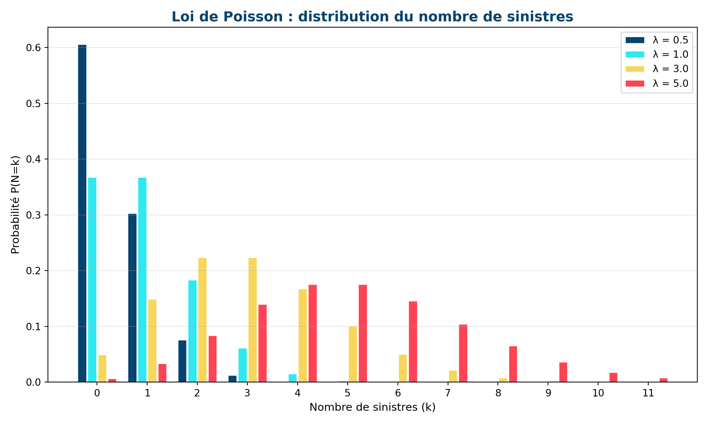
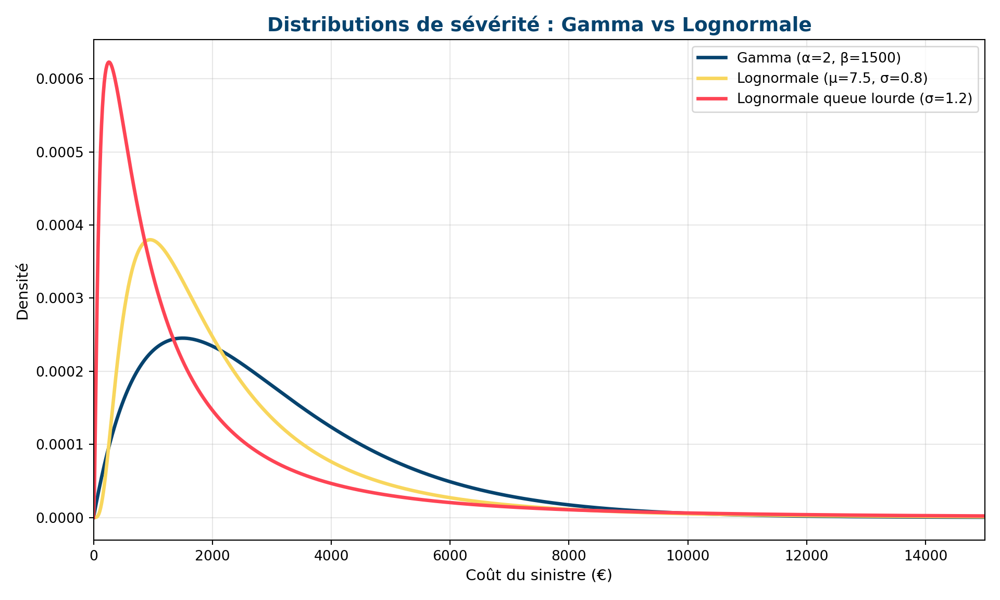
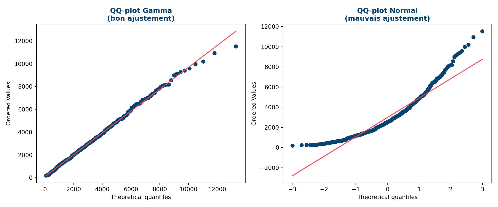

0.0.1 🎯 Objectifs d’apprentissage
- Justifier la décomposition fréquence × sévérité
- Modéliser la fréquence par une loi de Poisson
- Modéliser la sévérité par une loi Gamma ou lognormale
- Estimer les paramètres sur données réelles
- Valider les modèles avec des diagnostics statistiques
📚 Prérequis : Module 4 (sinistralité, indicateurs)
⏱️ Temps estimé : 3 heures
1 La décomposition fréquence × sévérité
1.1 Pourquoi séparer les deux ?
La prime pure se décompose en :
\[\text{Prime pure} = \underbrace{f}_{\text{Fréquence}} \times \underbrace{s}_{\text{Sévérité moyenne}}\]
Cette décomposition est fondamentale car fréquence et sévérité ont des comportements statistiques très différents :
| Fréquence | Sévérité | |
|---|---|---|
| Nature | Comptage (0, 1, 2…) | Montant continu (> 0) |
| Distribution | Poisson, Binomiale Négative | Gamma, Lognormale, Pareto |
| Variables explicatives | Âge, zone, CRM, ancienneté | Type de sinistre, garantie |
| Modèle GLM | Lien log, famille Poisson | Lien log, famille Gamma |
💡 Point clé
Deux segments peuvent avoir la même prime pure mais des profils très différents. Exemple : jeunes conducteurs (fréquence élevée, sévérité modérée) vs conducteurs âgés (fréquence modérée, sévérité élevée en corporel). Les séparer permet une tarification plus fine et des actions ciblées.
2 Modélisation de la fréquence
2.1 La loi de Poisson
Le nombre de sinistres par assuré suit typiquement une loi de Poisson :
\[P(N = k) = \frac{\lambda^k \, e^{-\lambda}}{k!}, \quad k = 0, 1, 2, \ldots\]
où \(\lambda\) est le paramètre d’intensité (nombre moyen de sinistres par unité d’exposition).
Propriétés : \(E[N] = \lambda\) et \(\text{Var}(N) = \lambda\) (égalité moyenne-variance).
2.2 Surdispersion : quand Poisson ne suffit pas
Si la variance observée est supérieure à la moyenne, on parle de surdispersion. Causes :
- Hétérogénéité non observée dans le portefeuille
- Corrélation entre sinistres d’un même assuré
⚠️ Solution : la Binomiale Négative
La loi Binomiale Négative ajoute un paramètre de dispersion qui permet \(\text{Var}(N) > E[N]\). En pratique, on teste d’abord Poisson, et on passe à la BN si les résidus montrent de la surdispersion.
3 Modélisation de la sévérité
3.1 Distributions classiques
La sévérité (coût individuel d’un sinistre) est positive et asymétrique à droite :
| Distribution | Formule | Usage |
|---|---|---|
| Gamma | \(f(x) = \frac{x^{\alpha-1} e^{-x/\beta}}{\beta^\alpha \Gamma(\alpha)}\) | GLM sévérité, sinistres attritionnels |
| Lognormale | \(\ln(X) \sim \mathcal{N}(\mu, \sigma^2)\) | Queue plus lourde que Gamma |
| Pareto | \(P(X > x) = (x_m / x)^\alpha\) | Sinistres graves, queues très lourdes |
(0.0, 15000.0)
📝 Choix de la distribution
- Gamma : adaptée aux sinistres attritionnels, queue modérée. C’est le choix par défaut dans les GLM de sévérité.
- Lognormale : queue plus lourde, adaptée quand il y a des sinistres importants mais pas extrêmes.
- Pareto / GPD : pour les sinistres graves au-delà d’un seuil. On les modélise séparément (théorie des valeurs extrêmes).
4 Estimation des paramètres
4.1 Maximum de vraisemblance
La méthode standard est le maximum de vraisemblance (MLE) :
\[\hat{\theta} = \arg\max_\theta \sum_{i=1}^n \ln f(x_i \mid \theta)\]
En Python avec scipy.stats :
from scipy.stats import poisson, gamma
import numpy as np
# Fréquence : estimation de lambda
sinistres_par_assure = np.array([0, 0, 1, 0, 2, 0, 1, 0, 0, 1])
lambda_hat = sinistres_par_assure.mean() # MLE pour Poisson = moyenne
print(f"Lambda estimé : {lambda_hat:.3f}")
# Sévérité : estimation Gamma
couts = np.array([1200, 3500, 800, 5200, 2100, 950, 4300, 1800])
alpha_hat, loc, beta_hat = gamma.fit(couts, floc=0)
print(f"Gamma : alpha={alpha_hat:.2f}, beta={beta_hat:.0f}")5 Validation et diagnostics
5.1 QQ-plot
Le QQ-plot compare les quantiles observés aux quantiles théoriques. Si les points s’alignent sur la diagonale, le modèle est adapté.
((array([ 80.37540022, 126.50456876, 160.95198634, 189.78104151,
215.20177452, 238.27306896, 259.59969306, 279.56556711,
298.43243844, 316.38821773, 333.57320108, 350.09541303,
366.04012535, 381.47604512, 396.4594944 , 411.03732496,
425.24900652, 439.12815816, 452.70369412, 466.00069648,
479.04109022, 491.84417282, 504.42703487, 516.80489799,
528.99138898, 540.99876445, 552.83809637, 564.51942648,
576.05189586, 587.44385422, 598.70295279, 609.83622363,
620.85014774, 631.75071386, 642.54346942, 653.23356496,
663.82579297, 674.32462189, 684.73422624, 695.05851311,
705.30114569, 715.46556431, 725.55500506, 735.57251655,
745.52097496, 755.40309752, 765.22145468, 774.97848116,
784.67648592, 794.31766119, 803.90409073, 813.43775733,
822.92054969, 832.35426864, 841.74063296, 851.08128458,
860.3777935 , 869.63166221, 878.8443298 , 888.01717582,
897.15152374, 906.24864423, 915.30975819, 924.33603952,
933.32861776, 942.28858049, 951.21697561, 960.11481343,
968.98306864, 977.82268213, 986.63456277, 995.41958894,
1004.1786101 , 1012.91244818, 1021.62189891, 1030.30773307,
1038.97069769, 1047.6115171 , 1056.23089406, 1064.82951064,
1073.40802924, 1081.96709341, 1090.50732871, 1099.02934345,
1107.5337295 , 1116.02106293, 1124.4919047 , 1132.94680129,
1141.38628532, 1149.81087607, 1158.22108007, 1166.61739157,
1175.00029308, 1183.37025577, 1191.72774 , 1200.07319564,
1208.40706256, 1216.72977095, 1225.04174174, 1233.34338692,
1241.63510986, 1249.91730568, 1258.19036148, 1266.45465673,
1274.71056346, 1282.95844657, 1291.1986641 , 1299.43156744,
1307.65750158, 1315.87680538, 1324.08981169, 1332.29684767,
1340.49823492, 1348.69428968, 1356.88532304, 1365.07164111,
1373.25354518, 1381.43133189, 1389.60529341, 1397.77571756,
1405.94288798, 1414.10708426, 1422.26858211, 1430.42765343,
1438.58456652, 1446.73958611, 1454.89297358, 1463.04498699,
1471.19588126, 1479.34590821, 1487.49531672, 1495.64435283,
1503.79325978, 1511.9422782 , 1520.0916461 , 1528.24159903,
1536.39237015, 1544.54419031, 1552.69728811, 1560.85189003,
1569.00822047, 1577.16650182, 1585.32695457, 1593.48979733,
1601.65524695, 1609.82351855, 1617.99482562, 1626.16938004,
1634.34739218, 1642.52907094, 1650.71462383, 1658.90425699,
1667.09817529, 1675.29658236, 1683.49968065, 1691.70767148,
1699.9207551 , 1708.13913071, 1716.36299657, 1724.59254999,
1732.8279874 , 1741.0695044 , 1749.3172958 , 1757.57155566,
1765.83247735, 1774.10025357, 1782.37507642, 1790.65713741,
1798.94662753, 1807.24373727, 1815.54865667, 1823.86157536,
1832.18268259, 1840.51216726, 1848.850218 , 1857.19702314,
1865.5527708 , 1873.91764892, 1882.29184528, 1890.67554751,
1899.06894319, 1907.47221983, 1915.88556492, 1924.30916599,
1932.74321058, 1941.18788634, 1949.64338103, 1958.10988255,
1966.58757898, 1975.07665863, 1983.57731003, 1992.089722 ,
2000.61408366, 2009.15058447, 2017.69941427, 2026.26076328,
2034.83482216, 2043.42178206, 2052.02183458, 2060.63517187,
2069.26198663, 2077.90247216, 2086.55682235, 2095.22523177,
2103.90789564, 2112.60500991, 2121.31677126, 2130.04337714,
2138.78502582, 2147.54191638, 2156.31424878, 2165.10222388,
2173.90604346, 2182.72591025, 2191.56202799, 2200.41460144,
2209.2838364 , 2218.16993978, 2227.07311958, 2235.99358499,
2244.93154636, 2253.88721526, 2262.86080451, 2271.85252825,
2280.86260189, 2289.89124222, 2298.93866743, 2308.00509711,
2317.09075232, 2326.19585563, 2335.3206311 , 2344.4653044 ,
2353.63010279, 2362.81525516, 2372.0209921 , 2381.24754589,
2390.49515059, 2399.76404205, 2409.05445794, 2418.36663783,
2427.70082318, 2437.05725742, 2446.43618598, 2455.83785633,
2465.26251801, 2474.71042271, 2484.18182427, 2493.67697876,
2503.19614451, 2512.73958215, 2522.30755468, 2531.90032749,
2541.51816844, 2551.16134786, 2560.83013865, 2570.52481633,
2580.24565904, 2589.99294766, 2599.76696579, 2609.56799989,
2619.39633926, 2629.25227614, 2639.13610576, 2649.04812638,
2658.98863937, 2668.95794926, 2678.95636383, 2688.98419411,
2699.04175452, 2709.12936289, 2719.24734052, 2729.39601228,
2739.57570666, 2749.78675587, 2760.02949584, 2770.30426638,
2780.61141121, 2790.95127804, 2801.32421865, 2811.73058899,
2822.17074922, 2832.64506384, 2843.15390175, 2853.69763633,
2864.27664557, 2874.8913121 , 2885.54202333, 2896.22917154,
2906.95315395, 2917.71437286, 2928.51323571, 2939.35015521,
2950.22554944, 2961.13984197, 2972.09346196, 2983.08684425,
2994.12042954, 3005.19466444, 3016.31000165, 3027.46690003,
3038.6658248 , 3049.90724759, 3061.19164665, 3072.51950691,
3083.8913202 , 3095.30758535, 3106.76880834, 3118.27550248,
3129.82818852, 3141.42739486, 3153.07365767, 3164.76752111,
3176.50953744, 3188.30026726, 3200.14027965, 3212.03015235,
3223.97047202, 3235.96183434, 3248.00484429, 3260.10011632,
3272.24827458, 3284.44995313, 3296.70579616, 3309.01645825,
3321.38260455, 3333.80491111, 3346.28406507, 3358.8207649 ,
3371.41572076, 3384.06965466, 3396.78330084, 3409.55740599,
3422.39272959, 3435.2900442 , 3448.25013577, 3461.27380401,
3474.36186266, 3487.51513989, 3500.73447862, 3514.02073692,
3527.37478837, 3540.79752246, 3554.28984498, 3567.85267845,
3581.48696253, 3595.19365451, 3608.9737297 , 3622.82818195,
3636.75802413, 3650.76428861, 3664.84802782, 3679.01031473,
3693.25224348, 3707.57492988, 3721.97951205, 3736.46715102,
3751.03903135, 3765.69636184, 3780.44037613, 3795.27233346,
3810.1935194 , 3825.20524655, 3840.30885539, 3855.50571507,
3870.79722419, 3886.18481178, 3901.66993809, 3917.25409562,
3932.93881002, 3948.72564114, 3964.61618407, 3980.61207021,
3996.71496841, 4012.92658617, 4029.24867079, 4045.68301072,
4062.23143681, 4078.89582375, 4095.67809142, 4112.58020643,
4129.60418366, 4146.75208786, 4164.02603533, 4181.4281957 ,
4198.9607937 , 4216.62611112, 4234.42648877, 4252.36432857,
4270.4420957 , 4288.66232088, 4307.02760273, 4325.54061024,
4344.20408537, 4363.02084575, 4381.99378753, 4401.12588831,
4420.42021031, 4439.87990357, 4459.50820943, 4479.30846405,
4499.28410224, 4519.4386614 , 4539.77578562, 4560.29923015,
4581.01286589, 4601.92068429, 4623.02680244, 4644.33546838,
4665.85106681, 4687.57812501, 4709.52131915, 4731.68548093,
4754.07560458, 4776.69685426, 4799.55457197, 4822.65428575,
4846.00171857, 4869.60279757, 4893.46366401, 4917.59068369,
4941.99045813, 4966.6698364 , 4991.63592773, 5016.89611486,
5042.45806839, 5068.32976195, 5094.51948848, 5121.03587757,
5147.88791401, 5175.08495764, 5202.63676458, 5230.55351008,
5258.84581287, 5287.5247615 , 5316.60194255, 5346.08947098,
5376.00002294, 5406.34687105, 5437.1439226 , 5468.40576076,
5500.1476893 , 5532.38578099, 5565.13693022, 5598.41891011,
5632.25043476, 5666.6512271 , 5701.64209292, 5737.24500193,
5773.48317647, 5810.38118889, 5847.96506857, 5886.26241984,
5925.30255199, 5965.11662311, 6005.73779934, 6047.20143175,
6089.54525314, 6132.80959754, 6177.03764559, 6222.27569969,
6268.57349316, 6315.98453881, 6364.56652287, 6414.38175184,
6465.49766074, 6517.98739344, 6571.93046748, 6627.41353887,
6684.53128515, 6743.38742967, 6804.09593499, 6866.78240002,
6931.5857044 , 6998.65995422, 7068.17679831, 7140.32820308,
7215.3297993 , 7293.42494887, 7374.88972563, 7460.03906888,
7549.2344576 , 7642.8935802 , 7741.50265768, 7845.63234527,
7955.95853847, 8073.29002007, 8198.60584113, 8333.10686607,
8478.28846063, 8636.04567737, 8808.83011899, 8999.89233207,
9213.6726834 , 9456.46543094, 9737.62321779, 10071.93500933,
10484.89150486, 11026.44875696, 11818.0706218 , 13307.19309049]), array([ 197.50452291, 230.27024292, 247.24590941, 250.79916605,
253.29426809, 265.83433611, 271.51682568, 321.15762286,
323.87241524, 347.22647861, 361.11388837, 395.27271844,
406.69455136, 435.37271775, 439.48360797, 465.41708324,
469.63683616, 487.20082123, 500.37474736, 525.47054119,
534.83277405, 538.97579228, 550.58060774, 564.05278311,
564.29958703, 572.74382146, 590.73357316, 613.59821264,
622.92319155, 627.3201504 , 633.41643589, 638.76836145,
644.91601229, 644.95361791, 645.58373865, 649.36832911,
651.96029249, 666.66587747, 709.19016575, 715.85991697,
737.23107255, 741.63063421, 750.61086168, 766.95911689,
775.59762153, 780.37730043, 787.45903215, 793.70708545,
802.77216942, 875.58293471, 889.04337862, 892.51088178,
936.02153058, 936.5160086 , 946.78148224, 960.20595727,
981.29832527, 983.38005561, 994.70789615, 1006.86342403,
1007.63113035, 1011.88270736, 1016.06917072, 1030.59284124,
1031.59231757, 1040.30648992, 1043.27205523, 1043.69487382,
1046.40093149, 1047.69261821, 1068.58781349, 1085.88869328,
1105.6824131 , 1108.76656586, 1122.17765886, 1132.59625253,
1133.92215632, 1136.95090124, 1149.30619411, 1175.54126027,
1180.38008157, 1188.98796274, 1192.59102159, 1201.57057232,
1211.42067513, 1213.75790575, 1215.86933809, 1226.69202378,
1238.44760176, 1238.68441699, 1250.85069531, 1257.48269655,
1257.91398222, 1260.42246089, 1269.30132067, 1275.40990096,
1276.01340119, 1282.19671612, 1288.44500612, 1289.00525003,
1302.74659797, 1306.02801907, 1341.50567333, 1350.86165685,
1354.90023935, 1356.12643921, 1364.75114328, 1370.57103079,
1372.02867567, 1375.05226093, 1400.82212543, 1404.90979397,
1423.84973705, 1436.25242299, 1438.2515496 , 1438.56737554,
1439.85089748, 1445.31320909, 1447.26693464, 1457.21617918,
1457.69303196, 1477.6343568 , 1491.19250986, 1492.93707756,
1503.30516044, 1507.92672108, 1523.56587595, 1540.99379042,
1541.16286028, 1542.50011487, 1542.75333647, 1549.62943893,
1555.90056666, 1559.53567808, 1561.31459027, 1564.55083787,
1575.85301133, 1586.27408681, 1587.04115858, 1588.41177874,
1593.66300109, 1606.26483363, 1606.97984205, 1607.3311155 ,
1613.83501418, 1615.6216506 , 1618.22454143, 1626.11225256,
1627.92098171, 1634.9565249 , 1636.7069132 , 1641.19809393,
1648.79567719, 1670.3570956 , 1682.15245128, 1684.40886664,
1688.44853366, 1692.9445642 , 1694.27927965, 1696.61700261,
1697.06378979, 1709.86474603, 1711.78642093, 1725.80831895,
1732.71933438, 1749.46526959, 1761.11456173, 1770.17031273,
1770.69212041, 1771.39771198, 1784.2181948 , 1821.86759077,
1825.61494977, 1825.97822049, 1842.1418716 , 1864.11634886,
1917.65237585, 1920.31256817, 1926.7548268 , 1947.19901521,
1947.74670193, 1947.8127014 , 1961.07215248, 1964.52705386,
1976.61207171, 1981.64181507, 1993.06489245, 2012.9598304 ,
2013.74447842, 2014.61324818, 2030.24455464, 2038.0320748 ,
2054.27975721, 2062.8927029 , 2065.24007947, 2068.87272106,
2073.42537656, 2073.4534415 , 2087.77827744, 2091.75378895,
2096.04369029, 2098.2789177 , 2108.08632404, 2109.02273183,
2127.05778289, 2128.54083396, 2145.68965895, 2149.22839542,
2157.43217368, 2160.37473285, 2172.75991258, 2200.49755554,
2202.8944745 , 2206.3325065 , 2210.487671 , 2217.43830084,
2225.90068605, 2230.73776511, 2241.69709532, 2256.35280992,
2260.3800315 , 2264.24020479, 2282.66876563, 2284.33106291,
2284.68956597, 2288.72547121, 2295.245901 , 2298.41158581,
2331.36051635, 2353.64579453, 2358.589446 , 2358.61270576,
2361.60281914, 2380.57618795, 2393.96774139, 2396.32552158,
2424.18141577, 2431.26294733, 2432.85533351, 2433.43272944,
2436.39702664, 2437.10844126, 2449.00679168, 2459.7422827 ,
2464.32056136, 2473.95371841, 2476.35913904, 2510.16813524,
2524.46444946, 2525.26267454, 2535.83692516, 2540.89474386,
2547.76475632, 2568.91122085, 2589.2919576 , 2592.08557902,
2592.91503183, 2594.27696429, 2595.14381864, 2609.47090804,
2614.42331328, 2616.43835246, 2618.45854168, 2635.13594041,
2637.62195741, 2641.16405909, 2652.83594035, 2662.75156198,
2671.45723657, 2672.38290233, 2692.74126072, 2697.33181269,
2717.8820563 , 2721.01131221, 2727.78900654, 2730.75988325,
2734.15586088, 2740.26192085, 2743.79234805, 2802.49953445,
2809.65941998, 2836.38494344, 2845.69166438, 2846.75336154,
2874.85761567, 2875.28755706, 2878.7287799 , 2898.75364048,
2900.27035695, 2900.92562683, 2903.54274536, 2924.13807425,
2937.68563734, 2937.93111255, 2959.54621235, 2976.82406738,
2977.26736746, 2981.53604867, 2998.4403961 , 3005.01262747,
3029.29728902, 3032.64546228, 3037.78572862, 3040.3718859 ,
3053.61810107, 3082.29247562, 3084.57136531, 3095.44074146,
3111.56139024, 3118.39545717, 3120.33550586, 3130.5892837 ,
3143.54824924, 3144.68144809, 3152.46923502, 3159.24845602,
3178.46179461, 3181.56590908, 3181.75326304, 3186.22800725,
3192.19142298, 3205.21345098, 3212.40837156, 3220.53891858,
3221.92389125, 3257.27004607, 3267.73071046, 3279.23177546,
3289.79559563, 3310.89018072, 3316.05841897, 3344.29064296,
3355.31489642, 3361.38718886, 3366.90831305, 3387.56752314,
3387.92447658, 3389.11851388, 3427.65034238, 3461.70249758,
3498.78788874, 3505.8757397 , 3528.64558984, 3531.39759548,
3532.95844288, 3534.41035615, 3555.52667253, 3572.45693845,
3578.7121434 , 3580.02106476, 3582.15363196, 3590.5190848 ,
3593.68549022, 3610.95145489, 3632.76668115, 3634.38891723,
3635.87131256, 3635.9021837 , 3642.39726558, 3653.06583004,
3672.70715972, 3704.72171015, 3716.15417772, 3756.33057896,
3775.74556573, 3790.95436553, 3792.27125874, 3821.09263575,
3833.39840632, 3866.73453964, 3878.59755967, 3881.42843506,
3904.83266871, 3907.79971615, 3910.51281221, 3917.86925377,
3936.48674124, 3936.87977258, 3951.73575877, 3969.5877623 ,
3985.46304124, 4060.46893252, 4065.56280768, 4136.26832873,
4153.21821928, 4162.84616034, 4174.09142649, 4185.26068795,
4220.03071197, 4255.60173885, 4257.10904471, 4266.66570359,
4271.08489117, 4300.05934645, 4320.10424844, 4340.18195974,
4354.9168578 , 4367.76439268, 4426.63278504, 4429.42174301,
4429.44323956, 4455.09014132, 4463.26834875, 4474.64677766,
4487.55265706, 4532.54988339, 4555.78936933, 4579.21844752,
4594.80235909, 4625.42250388, 4648.78340058, 4678.0369783 ,
4724.65859036, 4731.94360859, 4756.62649148, 4771.8146727 ,
4784.93237663, 4792.71425906, 4839.83992029, 4843.27151432,
4868.09271061, 4884.02034702, 4903.64086433, 4926.65071183,
4931.61816418, 4998.84092414, 5069.43991747, 5075.1625101 ,
5079.7145748 , 5095.49577443, 5131.2831711 , 5144.2535467 ,
5145.78547623, 5146.28764567, 5156.69895078, 5160.78637238,
5182.97033634, 5238.48984529, 5257.21883404, 5273.89486216,
5377.68605707, 5430.31913832, 5433.34425995, 5451.29686559,
5480.12509201, 5484.10921935, 5550.11971652, 5581.73881744,
5744.730919 , 5772.6596544 , 5805.43859032, 5843.40157896,
5859.25460808, 5880.19611089, 5975.93052462, 6145.03918662,
6153.39368581, 6191.01102416, 6197.24194805, 6319.20687092,
6342.78370079, 6383.05841472, 6458.48552384, 6459.56234471,
6479.30646569, 6502.74288853, 6503.29082548, 6547.76530123,
6660.24252202, 6689.86717778, 6853.59463012, 6862.81312002,
6867.43673897, 6918.80930261, 6974.57161835, 7000.71570808,
7028.33601757, 7165.88594757, 7180.7282194 , 7354.37989314,
7397.01980614, 7434.25822756, 7672.56248462, 7735.96093332,
7839.53943902, 7988.08453245, 8061.8161781 , 8133.11327967,
8177.39522397, 8180.06233435, 8561.1149993 , 8990.55996286,
9135.14432975, 9272.58896326, 9417.29879532, 9590.02849018,
9979.02420089, 10194.79829734, 10946.99668317, 11527.71896107])), (np.float64(0.9575430535569764), np.float64(106.86694217107743), np.float64(0.999052150173915)))((array([-2.99209858e+00, -2.71015927e+00, -2.55162541e+00, -2.43921385e+00,
-2.35113311e+00, -2.27822091e+00, -2.21572267e+00, -2.16084152e+00,
-2.11178767e+00, -2.06734403e+00, -2.02664403e+00, -1.98904794e+00,
-1.95406954e+00, -1.92133033e+00, -1.89052965e+00, -1.86142459e+00,
-1.83381593e+00, -1.80753820e+00, -1.78245240e+00, -1.75844061e+00,
-1.73540186e+00, -1.71324904e+00, -1.69190643e+00, -1.67130780e+00,
-1.65139483e+00, -1.63211595e+00, -1.61342528e+00, -1.59528183e+00,
-1.57764883e+00, -1.56049314e+00, -1.54378481e+00, -1.52749667e+00,
-1.51160399e+00, -1.49608418e+00, -1.48091659e+00, -1.46608224e+00,
-1.45156367e+00, -1.43734479e+00, -1.42341071e+00, -1.40974764e+00,
-1.39634279e+00, -1.38318426e+00, -1.37026095e+00, -1.35756253e+00,
-1.34507932e+00, -1.33280226e+00, -1.32072287e+00, -1.30883317e+00,
-1.29712567e+00, -1.28559331e+00, -1.27422944e+00, -1.26302778e+00,
-1.25198239e+00, -1.24108768e+00, -1.23033831e+00, -1.21972926e+00,
-1.20925574e+00, -1.19891322e+00, -1.18869738e+00, -1.17860411e+00,
-1.16862950e+00, -1.15876983e+00, -1.14902154e+00, -1.13938123e+00,
-1.12984566e+00, -1.12041173e+00, -1.11107648e+00, -1.10183707e+00,
-1.09269077e+00, -1.08363498e+00, -1.07466719e+00, -1.06578501e+00,
-1.05698612e+00, -1.04826831e+00, -1.03962946e+00, -1.03106750e+00,
-1.02258046e+00, -1.01416645e+00, -1.00582364e+00, -9.97550247e-01,
-9.89344581e-01, -9.81204996e-01, -9.73129904e-01, -9.65117774e-01,
-9.57167125e-01, -9.49276525e-01, -9.41444591e-01, -9.33669982e-01,
-9.25951403e-01, -9.18287599e-01, -9.10677353e-01, -9.03119487e-01,
-8.95612861e-01, -8.88156365e-01, -8.80748927e-01, -8.73389502e-01,
-8.66077081e-01, -8.58810678e-01, -8.51589342e-01, -8.44412143e-01,
-8.37278180e-01, -8.30186576e-01, -8.23136480e-01, -8.16127061e-01,
-8.09157513e-01, -8.02227049e-01, -7.95334905e-01, -7.88480336e-01,
-7.81662614e-01, -7.74881033e-01, -7.68134903e-01, -7.61423551e-01,
-7.54746322e-01, -7.48102575e-01, -7.41491685e-01, -7.34913044e-01,
-7.28366057e-01, -7.21850142e-01, -7.15364731e-01, -7.08909270e-01,
-7.02483218e-01, -6.96086043e-01, -6.89717230e-01, -6.83376271e-01,
-6.77062670e-01, -6.70775943e-01, -6.64515617e-01, -6.58281226e-01,
-6.52072317e-01, -6.45888445e-01, -6.39729174e-01, -6.33594076e-01,
-6.27482735e-01, -6.21394740e-01, -6.15329690e-01, -6.09287191e-01,
-6.03266856e-01, -5.97268307e-01, -5.91291174e-01, -5.85335090e-01,
-5.79399700e-01, -5.73484651e-01, -5.67589599e-01, -5.61714207e-01,
-5.55858142e-01, -5.50021077e-01, -5.44202692e-01, -5.38402673e-01,
-5.32620709e-01, -5.26856497e-01, -5.21109737e-01, -5.15380136e-01,
-5.09667405e-01, -5.03971258e-01, -4.98291417e-01, -4.92627606e-01,
-4.86979553e-01, -4.81346993e-01, -4.75729663e-01, -4.70127305e-01,
-4.64539663e-01, -4.58966488e-01, -4.53407532e-01, -4.47862553e-01,
-4.42331309e-01, -4.36813566e-01, -4.31309089e-01, -4.25817651e-01,
-4.20339023e-01, -4.14872983e-01, -4.09419311e-01, -4.03977788e-01,
-3.98548202e-01, -3.93130339e-01, -3.87723992e-01, -3.82328953e-01,
-3.76945020e-01, -3.71571992e-01, -3.66209669e-01, -3.60857856e-01,
-3.55516359e-01, -3.50184986e-01, -3.44863547e-01, -3.39551857e-01,
-3.34249730e-01, -3.28956983e-01, -3.23673435e-01, -3.18398908e-01,
-3.13133223e-01, -3.07876207e-01, -3.02627686e-01, -2.97387487e-01,
-2.92155443e-01, -2.86931384e-01, -2.81715143e-01, -2.76506557e-01,
-2.71305462e-01, -2.66111695e-01, -2.60925097e-01, -2.55745509e-01,
-2.50572773e-01, -2.45406732e-01, -2.40247233e-01, -2.35094122e-01,
-2.29947246e-01, -2.24806454e-01, -2.19671596e-01, -2.14542524e-01,
-2.09419090e-01, -2.04301147e-01, -1.99188550e-01, -1.94081154e-01,
-1.88978816e-01, -1.83881393e-01, -1.78788743e-01, -1.73700727e-01,
-1.68617203e-01, -1.63538032e-01, -1.58463078e-01, -1.53392201e-01,
-1.48325265e-01, -1.43262135e-01, -1.38202675e-01, -1.33146749e-01,
-1.28094226e-01, -1.23044970e-01, -1.17998849e-01, -1.12955731e-01,
-1.07915484e-01, -1.02877978e-01, -9.78430801e-02, -9.28106619e-02,
-8.77805930e-02, -8.27527442e-02, -7.77269864e-02, -7.27031911e-02,
-6.76812301e-02, -6.26609755e-02, -5.76422995e-02, -5.26250751e-02,
-4.76091750e-02, -4.25944724e-02, -3.75808407e-02, -3.25681535e-02,
-2.75562846e-02, -2.25451077e-02, -1.75344969e-02, -1.25243263e-02,
-7.51447003e-03, -2.50480239e-03, 2.50480239e-03, 7.51447003e-03,
1.25243263e-02, 1.75344969e-02, 2.25451077e-02, 2.75562846e-02,
3.25681535e-02, 3.75808407e-02, 4.25944724e-02, 4.76091750e-02,
5.26250751e-02, 5.76422995e-02, 6.26609755e-02, 6.76812301e-02,
7.27031911e-02, 7.77269864e-02, 8.27527442e-02, 8.77805930e-02,
9.28106619e-02, 9.78430801e-02, 1.02877978e-01, 1.07915484e-01,
1.12955731e-01, 1.17998849e-01, 1.23044970e-01, 1.28094226e-01,
1.33146749e-01, 1.38202675e-01, 1.43262135e-01, 1.48325265e-01,
1.53392201e-01, 1.58463078e-01, 1.63538032e-01, 1.68617203e-01,
1.73700727e-01, 1.78788743e-01, 1.83881393e-01, 1.88978816e-01,
1.94081154e-01, 1.99188550e-01, 2.04301147e-01, 2.09419090e-01,
2.14542524e-01, 2.19671596e-01, 2.24806454e-01, 2.29947246e-01,
2.35094122e-01, 2.40247233e-01, 2.45406732e-01, 2.50572773e-01,
2.55745509e-01, 2.60925097e-01, 2.66111695e-01, 2.71305462e-01,
2.76506557e-01, 2.81715143e-01, 2.86931384e-01, 2.92155443e-01,
2.97387487e-01, 3.02627686e-01, 3.07876207e-01, 3.13133223e-01,
3.18398908e-01, 3.23673435e-01, 3.28956983e-01, 3.34249730e-01,
3.39551857e-01, 3.44863547e-01, 3.50184986e-01, 3.55516359e-01,
3.60857856e-01, 3.66209669e-01, 3.71571992e-01, 3.76945020e-01,
3.82328953e-01, 3.87723992e-01, 3.93130339e-01, 3.98548202e-01,
4.03977788e-01, 4.09419311e-01, 4.14872983e-01, 4.20339023e-01,
4.25817651e-01, 4.31309089e-01, 4.36813566e-01, 4.42331309e-01,
4.47862553e-01, 4.53407532e-01, 4.58966488e-01, 4.64539663e-01,
4.70127305e-01, 4.75729663e-01, 4.81346993e-01, 4.86979553e-01,
4.92627606e-01, 4.98291417e-01, 5.03971258e-01, 5.09667405e-01,
5.15380136e-01, 5.21109737e-01, 5.26856497e-01, 5.32620709e-01,
5.38402673e-01, 5.44202692e-01, 5.50021077e-01, 5.55858142e-01,
5.61714207e-01, 5.67589599e-01, 5.73484651e-01, 5.79399700e-01,
5.85335090e-01, 5.91291174e-01, 5.97268307e-01, 6.03266856e-01,
6.09287191e-01, 6.15329690e-01, 6.21394740e-01, 6.27482735e-01,
6.33594076e-01, 6.39729174e-01, 6.45888445e-01, 6.52072317e-01,
6.58281226e-01, 6.64515617e-01, 6.70775943e-01, 6.77062670e-01,
6.83376271e-01, 6.89717230e-01, 6.96086043e-01, 7.02483218e-01,
7.08909270e-01, 7.15364731e-01, 7.21850142e-01, 7.28366057e-01,
7.34913044e-01, 7.41491685e-01, 7.48102575e-01, 7.54746322e-01,
7.61423551e-01, 7.68134903e-01, 7.74881033e-01, 7.81662614e-01,
7.88480336e-01, 7.95334905e-01, 8.02227049e-01, 8.09157513e-01,
8.16127061e-01, 8.23136480e-01, 8.30186576e-01, 8.37278180e-01,
8.44412143e-01, 8.51589342e-01, 8.58810678e-01, 8.66077081e-01,
8.73389502e-01, 8.80748927e-01, 8.88156365e-01, 8.95612861e-01,
9.03119487e-01, 9.10677353e-01, 9.18287599e-01, 9.25951403e-01,
9.33669982e-01, 9.41444591e-01, 9.49276525e-01, 9.57167125e-01,
9.65117774e-01, 9.73129904e-01, 9.81204996e-01, 9.89344581e-01,
9.97550247e-01, 1.00582364e+00, 1.01416645e+00, 1.02258046e+00,
1.03106750e+00, 1.03962946e+00, 1.04826831e+00, 1.05698612e+00,
1.06578501e+00, 1.07466719e+00, 1.08363498e+00, 1.09269077e+00,
1.10183707e+00, 1.11107648e+00, 1.12041173e+00, 1.12984566e+00,
1.13938123e+00, 1.14902154e+00, 1.15876983e+00, 1.16862950e+00,
1.17860411e+00, 1.18869738e+00, 1.19891322e+00, 1.20925574e+00,
1.21972926e+00, 1.23033831e+00, 1.24108768e+00, 1.25198239e+00,
1.26302778e+00, 1.27422944e+00, 1.28559331e+00, 1.29712567e+00,
1.30883317e+00, 1.32072287e+00, 1.33280226e+00, 1.34507932e+00,
1.35756253e+00, 1.37026095e+00, 1.38318426e+00, 1.39634279e+00,
1.40974764e+00, 1.42341071e+00, 1.43734479e+00, 1.45156367e+00,
1.46608224e+00, 1.48091659e+00, 1.49608418e+00, 1.51160399e+00,
1.52749667e+00, 1.54378481e+00, 1.56049314e+00, 1.57764883e+00,
1.59528183e+00, 1.61342528e+00, 1.63211595e+00, 1.65139483e+00,
1.67130780e+00, 1.69190643e+00, 1.71324904e+00, 1.73540186e+00,
1.75844061e+00, 1.78245240e+00, 1.80753820e+00, 1.83381593e+00,
1.86142459e+00, 1.89052965e+00, 1.92133033e+00, 1.95406954e+00,
1.98904794e+00, 2.02664403e+00, 2.06734403e+00, 2.11178767e+00,
2.16084152e+00, 2.21572267e+00, 2.27822091e+00, 2.35113311e+00,
2.43921385e+00, 2.55162541e+00, 2.71015927e+00, 2.99209858e+00]), array([ 197.50452291, 230.27024292, 247.24590941, 250.79916605,
253.29426809, 265.83433611, 271.51682568, 321.15762286,
323.87241524, 347.22647861, 361.11388837, 395.27271844,
406.69455136, 435.37271775, 439.48360797, 465.41708324,
469.63683616, 487.20082123, 500.37474736, 525.47054119,
534.83277405, 538.97579228, 550.58060774, 564.05278311,
564.29958703, 572.74382146, 590.73357316, 613.59821264,
622.92319155, 627.3201504 , 633.41643589, 638.76836145,
644.91601229, 644.95361791, 645.58373865, 649.36832911,
651.96029249, 666.66587747, 709.19016575, 715.85991697,
737.23107255, 741.63063421, 750.61086168, 766.95911689,
775.59762153, 780.37730043, 787.45903215, 793.70708545,
802.77216942, 875.58293471, 889.04337862, 892.51088178,
936.02153058, 936.5160086 , 946.78148224, 960.20595727,
981.29832527, 983.38005561, 994.70789615, 1006.86342403,
1007.63113035, 1011.88270736, 1016.06917072, 1030.59284124,
1031.59231757, 1040.30648992, 1043.27205523, 1043.69487382,
1046.40093149, 1047.69261821, 1068.58781349, 1085.88869328,
1105.6824131 , 1108.76656586, 1122.17765886, 1132.59625253,
1133.92215632, 1136.95090124, 1149.30619411, 1175.54126027,
1180.38008157, 1188.98796274, 1192.59102159, 1201.57057232,
1211.42067513, 1213.75790575, 1215.86933809, 1226.69202378,
1238.44760176, 1238.68441699, 1250.85069531, 1257.48269655,
1257.91398222, 1260.42246089, 1269.30132067, 1275.40990096,
1276.01340119, 1282.19671612, 1288.44500612, 1289.00525003,
1302.74659797, 1306.02801907, 1341.50567333, 1350.86165685,
1354.90023935, 1356.12643921, 1364.75114328, 1370.57103079,
1372.02867567, 1375.05226093, 1400.82212543, 1404.90979397,
1423.84973705, 1436.25242299, 1438.2515496 , 1438.56737554,
1439.85089748, 1445.31320909, 1447.26693464, 1457.21617918,
1457.69303196, 1477.6343568 , 1491.19250986, 1492.93707756,
1503.30516044, 1507.92672108, 1523.56587595, 1540.99379042,
1541.16286028, 1542.50011487, 1542.75333647, 1549.62943893,
1555.90056666, 1559.53567808, 1561.31459027, 1564.55083787,
1575.85301133, 1586.27408681, 1587.04115858, 1588.41177874,
1593.66300109, 1606.26483363, 1606.97984205, 1607.3311155 ,
1613.83501418, 1615.6216506 , 1618.22454143, 1626.11225256,
1627.92098171, 1634.9565249 , 1636.7069132 , 1641.19809393,
1648.79567719, 1670.3570956 , 1682.15245128, 1684.40886664,
1688.44853366, 1692.9445642 , 1694.27927965, 1696.61700261,
1697.06378979, 1709.86474603, 1711.78642093, 1725.80831895,
1732.71933438, 1749.46526959, 1761.11456173, 1770.17031273,
1770.69212041, 1771.39771198, 1784.2181948 , 1821.86759077,
1825.61494977, 1825.97822049, 1842.1418716 , 1864.11634886,
1917.65237585, 1920.31256817, 1926.7548268 , 1947.19901521,
1947.74670193, 1947.8127014 , 1961.07215248, 1964.52705386,
1976.61207171, 1981.64181507, 1993.06489245, 2012.9598304 ,
2013.74447842, 2014.61324818, 2030.24455464, 2038.0320748 ,
2054.27975721, 2062.8927029 , 2065.24007947, 2068.87272106,
2073.42537656, 2073.4534415 , 2087.77827744, 2091.75378895,
2096.04369029, 2098.2789177 , 2108.08632404, 2109.02273183,
2127.05778289, 2128.54083396, 2145.68965895, 2149.22839542,
2157.43217368, 2160.37473285, 2172.75991258, 2200.49755554,
2202.8944745 , 2206.3325065 , 2210.487671 , 2217.43830084,
2225.90068605, 2230.73776511, 2241.69709532, 2256.35280992,
2260.3800315 , 2264.24020479, 2282.66876563, 2284.33106291,
2284.68956597, 2288.72547121, 2295.245901 , 2298.41158581,
2331.36051635, 2353.64579453, 2358.589446 , 2358.61270576,
2361.60281914, 2380.57618795, 2393.96774139, 2396.32552158,
2424.18141577, 2431.26294733, 2432.85533351, 2433.43272944,
2436.39702664, 2437.10844126, 2449.00679168, 2459.7422827 ,
2464.32056136, 2473.95371841, 2476.35913904, 2510.16813524,
2524.46444946, 2525.26267454, 2535.83692516, 2540.89474386,
2547.76475632, 2568.91122085, 2589.2919576 , 2592.08557902,
2592.91503183, 2594.27696429, 2595.14381864, 2609.47090804,
2614.42331328, 2616.43835246, 2618.45854168, 2635.13594041,
2637.62195741, 2641.16405909, 2652.83594035, 2662.75156198,
2671.45723657, 2672.38290233, 2692.74126072, 2697.33181269,
2717.8820563 , 2721.01131221, 2727.78900654, 2730.75988325,
2734.15586088, 2740.26192085, 2743.79234805, 2802.49953445,
2809.65941998, 2836.38494344, 2845.69166438, 2846.75336154,
2874.85761567, 2875.28755706, 2878.7287799 , 2898.75364048,
2900.27035695, 2900.92562683, 2903.54274536, 2924.13807425,
2937.68563734, 2937.93111255, 2959.54621235, 2976.82406738,
2977.26736746, 2981.53604867, 2998.4403961 , 3005.01262747,
3029.29728902, 3032.64546228, 3037.78572862, 3040.3718859 ,
3053.61810107, 3082.29247562, 3084.57136531, 3095.44074146,
3111.56139024, 3118.39545717, 3120.33550586, 3130.5892837 ,
3143.54824924, 3144.68144809, 3152.46923502, 3159.24845602,
3178.46179461, 3181.56590908, 3181.75326304, 3186.22800725,
3192.19142298, 3205.21345098, 3212.40837156, 3220.53891858,
3221.92389125, 3257.27004607, 3267.73071046, 3279.23177546,
3289.79559563, 3310.89018072, 3316.05841897, 3344.29064296,
3355.31489642, 3361.38718886, 3366.90831305, 3387.56752314,
3387.92447658, 3389.11851388, 3427.65034238, 3461.70249758,
3498.78788874, 3505.8757397 , 3528.64558984, 3531.39759548,
3532.95844288, 3534.41035615, 3555.52667253, 3572.45693845,
3578.7121434 , 3580.02106476, 3582.15363196, 3590.5190848 ,
3593.68549022, 3610.95145489, 3632.76668115, 3634.38891723,
3635.87131256, 3635.9021837 , 3642.39726558, 3653.06583004,
3672.70715972, 3704.72171015, 3716.15417772, 3756.33057896,
3775.74556573, 3790.95436553, 3792.27125874, 3821.09263575,
3833.39840632, 3866.73453964, 3878.59755967, 3881.42843506,
3904.83266871, 3907.79971615, 3910.51281221, 3917.86925377,
3936.48674124, 3936.87977258, 3951.73575877, 3969.5877623 ,
3985.46304124, 4060.46893252, 4065.56280768, 4136.26832873,
4153.21821928, 4162.84616034, 4174.09142649, 4185.26068795,
4220.03071197, 4255.60173885, 4257.10904471, 4266.66570359,
4271.08489117, 4300.05934645, 4320.10424844, 4340.18195974,
4354.9168578 , 4367.76439268, 4426.63278504, 4429.42174301,
4429.44323956, 4455.09014132, 4463.26834875, 4474.64677766,
4487.55265706, 4532.54988339, 4555.78936933, 4579.21844752,
4594.80235909, 4625.42250388, 4648.78340058, 4678.0369783 ,
4724.65859036, 4731.94360859, 4756.62649148, 4771.8146727 ,
4784.93237663, 4792.71425906, 4839.83992029, 4843.27151432,
4868.09271061, 4884.02034702, 4903.64086433, 4926.65071183,
4931.61816418, 4998.84092414, 5069.43991747, 5075.1625101 ,
5079.7145748 , 5095.49577443, 5131.2831711 , 5144.2535467 ,
5145.78547623, 5146.28764567, 5156.69895078, 5160.78637238,
5182.97033634, 5238.48984529, 5257.21883404, 5273.89486216,
5377.68605707, 5430.31913832, 5433.34425995, 5451.29686559,
5480.12509201, 5484.10921935, 5550.11971652, 5581.73881744,
5744.730919 , 5772.6596544 , 5805.43859032, 5843.40157896,
5859.25460808, 5880.19611089, 5975.93052462, 6145.03918662,
6153.39368581, 6191.01102416, 6197.24194805, 6319.20687092,
6342.78370079, 6383.05841472, 6458.48552384, 6459.56234471,
6479.30646569, 6502.74288853, 6503.29082548, 6547.76530123,
6660.24252202, 6689.86717778, 6853.59463012, 6862.81312002,
6867.43673897, 6918.80930261, 6974.57161835, 7000.71570808,
7028.33601757, 7165.88594757, 7180.7282194 , 7354.37989314,
7397.01980614, 7434.25822756, 7672.56248462, 7735.96093332,
7839.53943902, 7988.08453245, 8061.8161781 , 8133.11327967,
8177.39522397, 8180.06233435, 8561.1149993 , 8990.55996286,
9135.14432975, 9272.58896326, 9417.29879532, 9590.02849018,
9979.02420089, 10194.79829734, 10946.99668317, 11527.71896107])), (np.float64(1928.1039174643352), np.float64(2975.094641263398), np.float64(0.9526574638116094)))
5.2 Tests statistiques
| Test | Usage | Hypothèse nulle |
|---|---|---|
| Chi-deux | Adéquation à une distribution | Les données suivent la loi théorique |
| Kolmogorov-Smirnov | Comparaison de distributions | Les deux distributions sont identiques |
| AIC / BIC | Comparaison de modèles | Le modèle avec le plus petit AIC est préféré |
💡 Point clé
La validation est aussi importante que l’estimation. Un modèle avec de bons paramètres mais une mauvaise adéquation produira des primes biaisées. Toujours vérifier avec un QQ-plot et comparer plusieurs distributions avec l’AIC.
Synthèse
5.2.1 🎯 Les 5 concepts à retenir
- Prime pure = Fréquence × Sévérité — Deux composantes modélisées séparément
- Poisson pour la fréquence — Binomiale Négative si surdispersion
- Gamma pour la sévérité — Lognormale ou Pareto pour les queues lourdes
- Maximum de vraisemblance — Méthode standard d’estimation
- QQ-plot et AIC — Toujours valider l’adéquation du modèle
Auto-évaluation
Question 1 : Pourquoi séparer fréquence et sévérité ?
Réponse : Parce qu’elles ont des comportements statistiques différents (comptage vs montant continu), des variables explicatives différentes, et des distributions différentes. Les séparer permet une tarification plus fine et des actions ciblées (réduire la fréquence par la prévention, limiter la sévérité par les franchises).
Question 2 : Qu’est-ce que la surdispersion et comment la traiter ?
Réponse : La surdispersion survient quand la variance observée dépasse la moyenne (condition d’égalité de Poisson). Elle indique une hétérogénéité non captée. On la traite en passant à une Binomiale Négative qui a un paramètre de dispersion supplémentaire, ou en enrichissant le modèle avec plus de variables explicatives.
Question 3 : Quand utiliser Gamma vs Lognormale pour la sévérité ?
Réponse : Gamma : choix par défaut pour les GLM, queue modérée, bien adaptée aux sinistres attritionnels. Lognormale : queue plus lourde, utile quand il y a quelques sinistres très coûteux. On compare avec l’AIC et les QQ-plots. En pratique, Gamma est préférée car elle s’intègre naturellement dans le framework GLM.
Question 4 : Comment interpréter un QQ-plot ?
Réponse : Les points doivent s’aligner sur la droite diagonale. Des écarts systématiques indiquent un mauvais ajustement : points au-dessus de la droite en queue droite = le modèle sous-estime les gros sinistres. Points en S = le modèle a la mauvaise forme. Un bon QQ-plot montre des points proches de la droite avec de légères fluctuations aléatoires.
Glossaire
| Terme | Définition |
|---|---|
| Fréquence | Nombre de sinistres par unité d’exposition |
| Sévérité | Coût moyen individuel d’un sinistre |
| Poisson | Distribution classique pour les comptages |
| Surdispersion | Variance > Moyenne dans un modèle de comptage |
| Gamma | Distribution continue positive, asymétrique à droite |
| Lognormale | Distribution dont le log suit une loi normale |
| MLE | Maximum Likelihood Estimation — méthode d’estimation |
| QQ-plot | Graphique quantile-quantile pour vérifier l’adéquation |